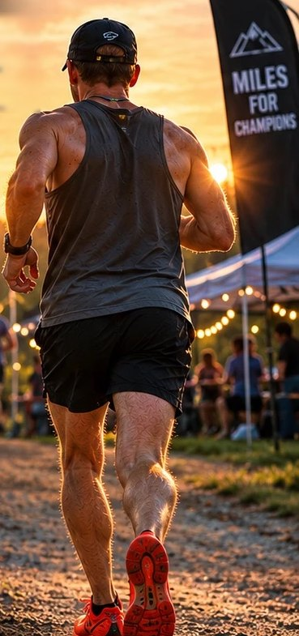
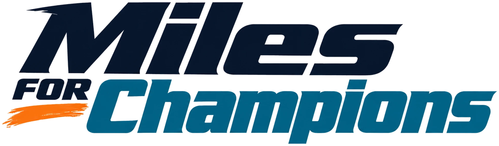
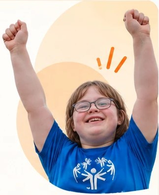

Run
Join the Backyard Ultra
Run 100 miles solo, build a relay team, or join us for a few loops. Every mile helps give 200 Special Olympics Champions a season of sports.
Register to Run

Run 100 miles solo, build a relay team, or join us for a few loops. Every mile helps give 200 Special Olympics Champions a season of sports.
Register to Run
Your donation helps provide Special Olympics Champions with the opportunity to experience what sports can do: confidence, friendships, and a true sense of belonging.

Run 100 miles solo, build a relay team, or join us for a few loops. Every mile helps give 200 Special Olympics Champions a season of sports.
24 loops · 100 miles · 24 hours · Solo, relay, or a few loops
You don't have to be an ultrarunner. Go the full 100 miles, share the distance with a team, or come run a few loops. Everyone runs for the same mission.
“I'm running 100 miles, but I don't want to do it alone. Come run with me!” — Ryan Latham
24 loops. 100 miles. One runner.
Take on the full challenge: one 4.167-mile loop every hour, on the hour, for 24 hours.
Take on 100 Miles100 miles. One team. One mission.
Build a team and split the 24 loops however you like. Together, your team covers all 100 miles.
Build or Join a TeamYour distance. Your pace. Your mission.
Join us for one loop, a few loops, or as many as you'd like. Every mile matters.
Run a Few LoopsSimple rules, big challenge. Here's how a backyard ultra works.
Every loop is the same 4.167-mile course. Run it, walk it, and be back at the start before the next loop begins.
A new loop starts at the top of every hour. You have 60 minutes per loop. Finish early and the rest of the hour is yours to rest and refuel.
24 loops in 24 hours adds up to 100 miles. Go solo, share it with a relay team, or run a few loops toward the mission.
Giving everyone the opportunity to experience what sports can do.
Every loop at the Backyard Ultra helps give Special Olympics athletes, who are called Champions, a full season of sports.
“Sports changed my life. Now I'm using my miles to help change someone else's.”
Ryan Latham, who grew up with dyslexia and found confidence, teammates, and discipline through sports.
to help give 200 Special Olympics Champions a season of sports
Ryan will be running the 2027 Boston Marathon. “Qualifying was for me. These miles are for the mission.”
Click Register Now, pick your challenge (100 Miles Solo, Relay Team, or Run a Few Loops) and complete the form. Relay captains register first and create the team; teammates then register on their own and pick that team.
Not at all. You can go the full 100 miles solo, split the 24 loops with a relay team, or run one loop, a few loops, or as many as you'd like.
Your team works together to complete 24 loops. One designated runner represents the team on each hourly loop, and exchanges happen at the start/finish area between loops. Rotate runners however you like, as long as each loop is finished within 60 minutes.
The start/finish area is the central gathering point for runners, relay teams, crews, and supporters. Details about crew setup, aid, water, and restrooms will be shared with registered participants before race day.
The event runs overnight. If you're running after dark, you must carry a headlamp or other appropriate lighting and wear reflective or high-visibility gear.
Let event staff know if you withdraw or run into an issue on the course. Runner safety comes first, and event organizers may stop a runner's participation when it's necessary for safety.
On private property approximately 3 miles from Lake Arcadia in Oklahoma City. The exact address and arrival instructions go out to registered participants before race day.
No, fundraising is optional. If you'd like to help, $120 gives one Special Olympics Champion a season of sports, and every dollar counts toward our $24,000 goal.
100 miles. 200 Champions. One mission. Claim your spot at the Miles For Champions Backyard Ultra.